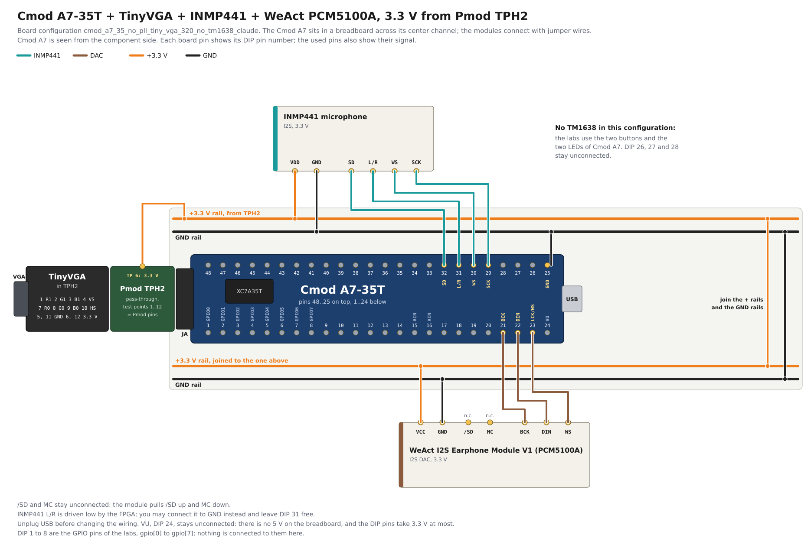

Generated by Claude Opus 5.5 (claude-opus-5-5) in Claude Code 2.1.325, effort level xhigh, using prompt from Yuri Panchul. See the verbatim prompt in the Appendix.
Cmod A7-35T without TM1638 and without an MMCM: TinyVGA 320x480
Board configuration cmod_a7_35_no_pll_tiny_vga_320_no_tm1638_claude. Русская версия: README_ru.md.
This is cmod_a7_35_no_pll_tiny_vga_320_claude without the TM1638 module. The labs get the two buttons of Cmod A7 as their keys and its two LEDs as their LEDs, and there is no seven-segment display. Everything else is that of cmod_a7_35_no_pll_tiny_vga_320_claude: the 12 MHz clock without an MMCM, VGA 320x480 with pixels of exactly two at a line rate of 30 kHz that some monitors refuse, the microphone, the DAC, the pins and the wiring. The other configurations without TM1638 are cmod_a7_35_tiny_vga_640_no_tm1638_claude, cmod_a7_35_no_pll_tiny_vga_304_no_tm1638_claude.
Contents
- What is different
- How it is made
- The hardware and the wiring
- Building and running the labs
- Status
- Files
- Appendix: the prompts
What is different
| cmod_a7_35_no_pll_tiny_vga_320_claude | cmod_a7_35_no_pll_tiny_vga_320_no_tm1638_claude, this one | |
|---|---|---|
| Keys of the labs | 8 keys of TM1638 | BTN0 and BTN1 of Cmod A7: key[0] and key[1], also sw[0] and sw[1] |
| LEDs of the labs | 8 LEDs of TM1638, the first two also on LED1 and LED2 of Cmod A7 | LED1 and LED2 of Cmod A7: led[0] and led[1] |
| Seven-segment display | 8 digits of TM1638 | None |
| Reset button | Either Cmod button | None: both buttons are keys |
| DIP 26, 27, 28 | TM1638 STB, CLK, DIO | Unconnected |
A button gives 1 when pressed; an LED lights on 1. The labs get one seven-segment digit that goes nowhere, so a lab that drives a display builds and runs, and its display output is lost. Whatever a lab shows on LEDs beyond the first two is lost the same way.
The design is in reset for the first three clock cycles after loading. No button resets it: to start a lab again, load the FPGA again with ./04_configure_fpga.bash.
The design keeps DIP 26 and 27, the STB and CLK of TM1638 in cmod_a7_35_no_pll_tiny_vga_320_claude, high, and does not drive DIP 28. Leave the three pins unconnected.
How it is made
board_specific_top.sv has two lines of code. It defines FORCE_NO_INSTANTIATE_TM1638_BOARD_CONTROLLER_MODULE and includes the board_specific_top.sv of cmod_a7_35_no_pll_tiny_vga_320_claude, which then leaves out TM1638 even though peripherals/lab_specific_board_config.svh turns it on. Other boards of the repository without TM1638, such as tang_nano_9k_hdmi_no_tm1638, are made the same way, but some of them draw a virtual TM1638 on the screen; this one does not.
board_specific.xdc is the one of cmod_a7_35_no_pll_tiny_vga_320_claude. It keeps the lines of DIP 26, 27 and 28 uncommented, because the included top level still has these ports.
The hardware and the wiring
The parts, the 3.3 V source, the assembly and the wiring tables are those of cmod_a7_35_no_pll_tiny_vga_320_claude without TM1638: leave out the module and its five wires. DIP 25 still goes to the GND rail. The pins in short:
| Cmod A7 | Connect to |
|---|---|
| Pmod JA | TinyVGA |
| DIP 21, 22, 23 | DAC BCK, DIN, and LCK of GY-PCM5102 or WS of WeAct |
| DIP 24, VU | Variant A: nothing. Variant B: the regulator input only |
| DIP 25 | GND rail |
| DIP 26, 27, 28 | Nothing |
| DIP 29, 30, 31, 32 | INMP441 SCK, WS, L/R, SD |
TinyVGA. The VGA output is TinyVGA, the Pmod board of Leo Moser, in Pmod socket JA; its design files are in github.com/mole99/tiny-vga. The Tiny Tapeout store sells it assembled as Tiny VGA Pmod, €15.00 in November 2026. It can also be ordered assembled from JLCPCB with GERBER-tiny-vga.zip, BOM-tiny-vga.csv and CPL-tiny-vga.csv from pcb/jlcpcb/production_files/ of the repository; the steps are in Where to get TinyVGA of cmod_a7_35_claude_tiny_vga_640.
The drawings of this directory have no TM1638, for both DAC modules, WeAct I2S Earphone Module (PCM5100A) and GY-PCM5102 (PCM5102A).
Variant A: 3.3 V from Pmod TPH2


Variant B: 3.3 V from a regulator


Microphone, DAC and regulator plugged into the breadboard
breadboard_weact.png with the WeAct module and breadboard_gy_pcm5102.png with GY-PCM5102 show the microphone, the DAC and the regulator of variant B plugged straight into the breadboard. The vector versions of all drawings are the .svg files of the same names.


Building and running the labs
In a lab directory, choose the board once with ./06_choose_another_fpga_board.bash and pick cmod_a7_35_no_pll_tiny_vga_320_no_tm1638_claude. Then build and load as for cmod_a7_35_no_pll_tiny_vga_320_claude:
./03_synthesize_for_fpga.bash
./04_configure_fpga.bashThe scripts use Vivado for every board whose name starts with cmod_a7, so this configuration needs no change of the scripts.
Status
Built with Vivado 2026.1 with the configuration file of the scripts, peripherals/lab_specific_board_config.svh, which turns TM1638 on: the builds show that this configuration leaves it out all the same.
| Lab | LUTs | Registers | Worst setup slack |
|---|---|---|---|
labs/1_basics/1_05_7seven_segment_letter | 41 | 44 | 79.3 ns |
labs/2_graphics/2_3_color_stripes | 54 | 45 | 79.2 ns |
labs/3_music/3_10_spectrum_analyzer | 2340 | 1471 | 68.1 ns |
All builds have no errors and no critical warnings, and meet all timing at 12 MHz, a clock period of 83.3 ns, with no MMCM or PLL. None of the netlists has a TM1638 module. Vivado gives the design rule warning CFGBVS-1, as for cmod_a7_35_claude_tiny_vga_640; it does not stop the bitstream.
Not yet tried on a real board.
Files
| File | What it is |
|---|---|
| board_specific_top.sv | Defines FORCE_NO_INSTANTIATE_TM1638_BOARD_CONTROLLER_MODULE and includes the top level of cmod_a7_35_no_pll_tiny_vga_320_claude |
| board_specific.xdc | The same as in cmod_a7_35_no_pll_tiny_vga_320_claude |
| board_specific.tcl | FPGA part for Vivado |
wiring_*.svg, wiring_*.png | The wiring diagrams without TM1638, for both DAC modules and both 3.3 V sources |
breadboard_*.svg, breadboard_*.png | The breadboard layouts without TM1638, for both DAC modules |
| README.md, README.html | This instruction in English |
| README_ru.md, README_ru.html | The same in Russian |
The drawings come from the generators of cmod_a7_35_claude_tiny_vga_640, run with the name of this configuration; they leave out TM1638 for every name with _no_tm1638 in it:
cd ../cmod_a7_35_claude_tiny_vga_640
python3 generate_wiring_diagram.py cmod_a7_35_no_pll_tiny_vga_320_no_tm1638_claude
python3 generate_breadboard_diagram.py cmod_a7_35_no_pll_tiny_vga_320_no_tm1638_claude
cd ../cmod_a7_35_no_pll_tiny_vga_320_no_tm1638_claude
for f in wiring_*.svg breadboard_*.svg
do
# ${f%.svg} is the file name without the .svg suffix
inkscape "$f" --export-type=png --export-dpi=96 \
--export-background=white --export-filename="${f%.svg}.png"
doneAppendix: the prompts
The rest of the design comes from the prompts in the appendix of cmod_a7_35_no_pll_tiny_vga_320_claude. This configuration comes from the following prompts, sent by Yuri Panchul in the same Claude Code session on 16 and 17 November 2026, verbatim. They are all the prompts of the session from the first one about this configuration on, the requests to commit and push included, and the prompts that follow and concern this configuration are added here too. The prompts name the configurations as they were called then: the suffix _claude came at 00:43, tiny_ at 09:47 and tiny_vga_640 at 10:20 on 17 November. The times are Pacific time (UTC−8).
23:17:
keep README.csv with CR-LF for now; I will fix it later; first commint and push, then create 3 new configurations that do not use tm1638, just have 2 buttons, 2 leds and no 7-segement display: cmod_a7_35_no_tm1638
cmod_a7_35_no_pll_vga_304_no_tm1638
cmod_a7_35_no_pll_vga_320_no_tm163823:53:
commit and push00:29 on 17 November, about the suffixes _vga_320, _vga_304 and _no_pll that Yuri Panchul had added to the board menu in scripts/steps/00_setup.source_bash, so that the menu lists the configurations without an MMCM under cmod_a7_35:
check the changes I did manually. Tell why they are needed00:37 on 17 November; the catalog boards/README.csv went back to one line for the physical board, cmod_a7_35:
yes, fix the catalog, then commit and push00:43 on 17 November:
Add to all your cmod_a7 configurations suffix _claude. Update all the relevant files.00:56 on 17 November:
commit and push09:47 on 17 November; it added tiny_ before vga in the names of the configurations without an MMCM and the paragraph on TinyVGA in The hardware and the wiring:
convert all mentions to vga in configuration names and the related texts to tiny_vga. Specifically mention TinyVGA in documentation, repository https://github.com/mole99/tiny-vga and where to buy it retail or order from JLCPCB. Make sure to add this and other previous and follow-up related prompt as appendices to the instructions you generate.10:20 on 17 November:
commit and push; then rename cmod_a7_35_claude to cmod_a7_35_claude_tiny_vga_640 and cmod_a7_35_no_tm1638_claude into cmod_a7_35_tiny_vga_640_no_tm1638_claude19:00 on 17 November:
commit and push19:47 on 17 November:
commit and push